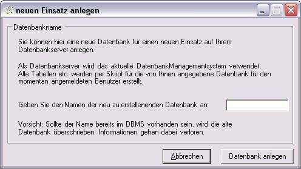
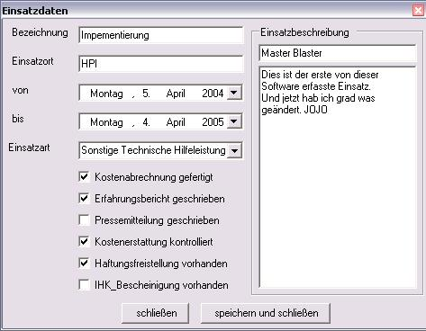
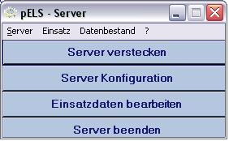
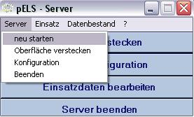
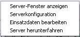
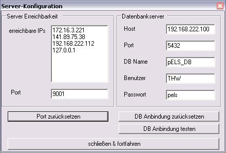

|
|
|
|
Zurück
 pELS-Server pELS-Server
Erster Start des Servers
Hinweis: Da die Daten auf einer Datenbank gespeichert werden, können Sie den Server erst nutzen, nachdem Sie PostgreSQL installiert haben.
PostgreSQL ist ein OpenSource Datenbanksystem das Sie hier beziehen können.
Beim ersten Starten müssen Sie die Verbindungdaten wie Host, Port des Datenbankservers eintragen.
Zudem muss ein Benutzer (+Passwort) angegeben werden der auf dem Datenbankserver auch vorhanden ist. Sollte der Datenbank Server nicht von Ihnen administriert werden, wenden Sie sich an den zuständigen Administrator. Sie brauchen auf jeden Fall einen Benutzer-Account, der es ermöglicht Datenbanken anzulegen.
Sollte noch keine Datenbank auf dem Datenbank-Server angelegt sein, können Sie sich bei PostgreSQL auf die Pseudo-Datenbank "template1" verbinden.
Sie können erst mit dem Starten des Servers fortfahren, wenn die Verbindung zur Datenbank korrekt ist.
Solange Sie nicht mit einer gültigen Einsatzdatenbank verbunden sind, kann es beim Starten noch zu weiteren Fehlermeldungen kommen. Diese können jedoch ignoriert werden.
Hinweis: Arbeiten Sie erst weiter nachdem Sie einen neuen Einsatz auf dem Datenbanksystem angelegt haben.
Neuen Einsatz anlegen
Dieses Menü können Sie nur erreichen, wenn der pELS-Server bereits gestartet und somit auch mit einer Datenbank auf dem Datenbankserver verbunden ist.

neuen Einsatz anlegen
Mit Hilfe der aktuellen Verbindungsdaten wird auf dem Datenbankserver eine neue Datenbank mit dem angegeben Namen erstellt. Alle für pELS relevanten Tabellen, Sequenzen, Constraints (etc.) werden mit Hilfe eines Skripts angelegt. Dieser Vorgang kann bis zu einer Minute dauern. Die neue Datenbank gehört dem Nutzer, der Sie erstellt hat.
Folgende typische Probleme tauchen beim Anlegen einer neuen Datenbank auf:
Der Nutzer hat nicht die Rechte um Datenbanken auf dem Datenbankserver zu erstellen.
-> Stellen Sie dies sicher. Wenden Sie sich ggf. an den Administrator der Datenbank.
Die Datenbank ist zur Zeit in Benutzung
-> Sollte eine Datenbank mit dem angegebenen Namen bereits existieren, wird diese gelöscht und eine neue mit diesem Namen angelegt. Wenn jedoch auch nur ein Nutzer im Netzwerk gerade eine Verbindung zu dieser Datenbank hält, z.B. durch ein Administrationstool oder einen anderen pELS-Server, verweigert PostgreSQL das Löschen.
(Dies gilt auch und v.a. wenn Sie aktuell mit dieser Datenbank verbunden sind!)
Einsatzdaten bearbeiten
Zu jedem Einsatz existiert immer genau ein Datensatz 'Einsatzdaten'. Über den Menüpunkt 'Einsatz\aktuelle Einsatzdaten' können Sie als Administrator des pELS-Server den aktuellen Einsatz einsehen & editieren.

aktueller Einsatz
Sollten Sie das Fenster mit dem Button "Speichern & Schließen" verlassen, werden die Änderungen auf der Datenbank gespeichert.
Datenbestand
Datenbestand exportieren
Alle Daten des aktuellen Einsatzes können exportiert werden. Für den Reimport in pELS empfehlen wir das entsprechende Format.
Alternativ können die Daten auch als CSV-Dateien (Comma Seperated Values) exportiert werden. Somit ist es möglich die Einsatzdaten auch in andere Programme zu exportieren.
Datenbestand importieren
Zum Importieren sollten nur Backups verwendet werden, die von pELS-Servern der gleichen Version erstellt wurden.
Ein Import ist immer eine Übernahme des gesamten Inhaltes. Somit gehen ALLE Einsatzdaten die zum aktuellen Einsatz gehören verloren.
Sollten Sie das nicht wollen, legen Sie vorher einen neuen Einsatz an /*hier linken zu kapitel*/.
Nach dem Import sollten Sie den Server manuell neu starten /*hier linken zu kapitel*/.
Das Server-Fenster

Server Hauptfenster
Alle Optionen im Hauptfenster finden sich auch als Untermenüfunktionen des Hauptmenüs wieder.
neu starten
Prinzipiell sollte es nicht notwendig sein den Server manuell neu zu starten. Sollten Sie es als Administrator doch für notwendig halten, können Sie das unter dem Menüpunkt "Server\neu starten" tun ohne das Programm zu verlassen.

Server neu starten
Dabei wird die Verbindung zur Datenbank erneut initialisiert, sowie alle Remoting-Verbindungen.
Hinweis:Alle angemeldeten Clients verlieren die Verbindung zum Server, wenn dieser neu startet!
Server/Oberfläche verstecken

Server KontextMenü
Der Server verschwindet als Icon in der Taskbar. Dort können Sie Ihn über das Kontextmenü oder einen Doppelklick wieder hervorbringen.
Serverkonfiguration

Server Konfiguration
Hier befinden sich Informationen die sich mit Verbindungen des Servers zu anderen Rechnern befassen.
Auf der linken Seite finden Sie eine Auflistung aller IPs auf der pELS-Clients den Server erreichen können.
Wieviele dies sind hängt von der Anzahl der Netzwerkschnittstellen ab, die auf dem Rechner zur Verfügung stehen. Sie können den Anmeldeport anpassen. Sollte dieser nicht frei sein, wird ausgehend von diesem der nächste freie Port gewählt.
Auf der rechten Seite finden Sie die Verbindungsdaten zur Datenbank. Es ist nicht möglich dieses Fenster zu schließen ohne eine korrekte Verbindung zur Datenbank festgelegt zu haben.
Über den Button "DB Anbindung testen" können Sie sich vergewissern, dass die Einstellungen 'korrekt' sind.
Sollten Sie Änderungen speichern wird der Server neu gestartet um die Ports bzw. die Datenbankanbindung für alle neu zu initialisieren. Dabei wird auch der ODBC Treiber rekonfiguriert. Den Hinweis auf die Änderung der Registry können Sie daher beruhigt bestätigen.
Hinweis: 'korrekt' in diesem Zusammenhang bedeutet nur, dass Sie mit einer Datenbank auf dem Datenbankserver verbunden sind. Es ist keine Aussage über den konsistenten Zustand oder das erwartete Datenbankschema!
Zurück
project.ELS version 1.0
|
|